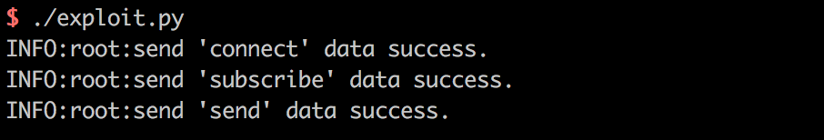
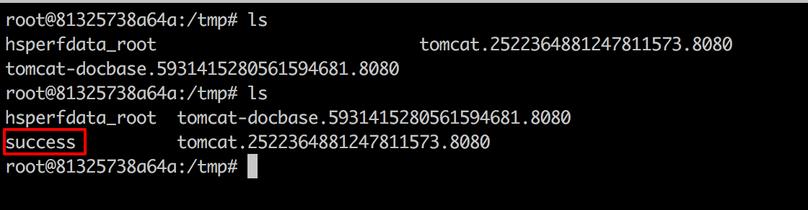

Spring Messaging 远程命令执行漏洞（CVE-2018-1270）¶
spring messaging为spring框架提供消息支持，其上层协议是STOMP，底层通信基于SockJS，
在spring messaging中，其允许客户端订阅消息，并使用selector过滤消息。selector用SpEL表达式编写，并使用StandardEvaluationContext解析，造成命令执行漏洞。
参考链接：
- https://pivotal.io/security/cve-2018-1270
- https://xz.aliyun.com/t/2252
- https://cert.360.cn/warning/detail?id=3efa573a1116c8e6eed3b47f78723f12
- https://github.com/CaledoniaProject/CVE-2018-1270
漏洞环境¶
执行如下命令启动一个基于Spring Messaging 5.0.4的Web应用：
docker compose up -d
环境启动后，访问http://your-ip:8080即可看到一个Web页面。
漏洞复现¶
网上大部分文章都说spring messaging是基于websocket通信，其实不然。spring messaging是基于sockjs（可以理解为一个通信协议），而sockjs适配多种浏览器：现代浏览器中使用websocket通信，老式浏览器中使用ajax通信。
连接后端服务器的流程，可以理解为：
所以我们可以使用http来复现漏洞，称之为"降维打击"。
我编写了一个简单的POC脚本exploit.py（需要用python3.6执行），因为该漏洞是订阅的时候插入SpEL表达式，而对方向这个订阅发送消息时才会触发，所以我们需要指定的信息有：
- 基础地址，在vulhub中为
http://your-ip:8080/gs-guide-websocket - 待执行的SpEL表达式，如
T(java.lang.Runtime).getRuntime().exec('touch /tmp/success') - 某一个订阅的地址，如vulhub中为：
/topic/greetings - 如何触发这个订阅，即如何让后端向这个订阅发送消息。在vulhub中，我们向
/app/hello发送一个包含name的json，即可触发这个事件。当然在实战中就不同了，所以这个poc并不具有通用性。
根据你自己的需求修改POC。如果是vulhub环境，你只需修改1中的url即可。
执行：

进入容器docker compose exec spring bash，可见/tmp/success已成功创建：
